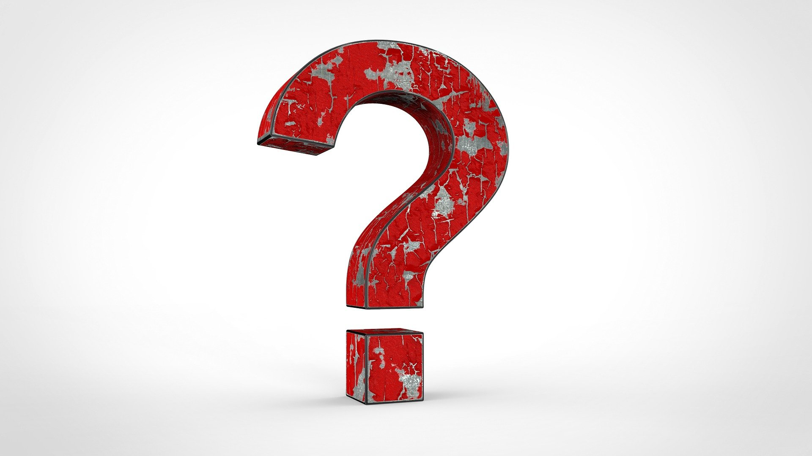
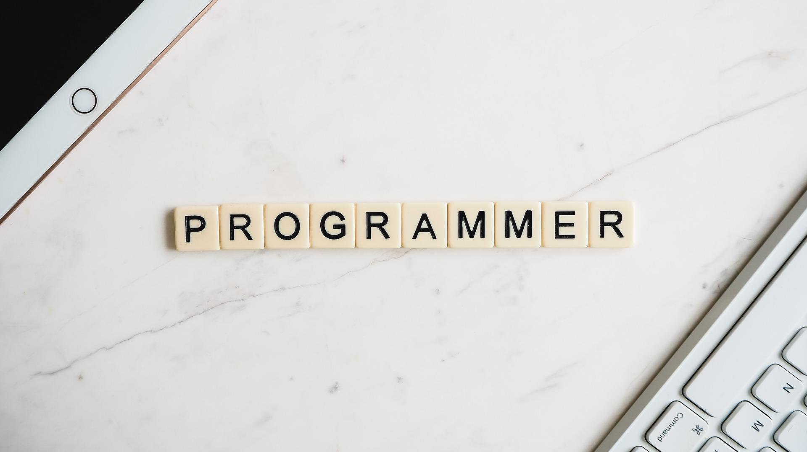

언제부터 시작하나요?
9월 18일, 일요일 오후 9시 Discord에서 시작합니다.
왜 하나요?
일주일 뭐 했는지 정리 좀 하며 살아보렵니다.
뭘 하나요?
이번주 회고와 다음주 목표설정, 그리고 지식공유를 합니다.
개인당 10분 정도 공유하는 시간을 가집니다. (지식공유는 선택입니다.)
하면 뭐가 좋아요?
일주일을 정리해보는 시간을 가지고 성장할 수 있어요. 아마도요.